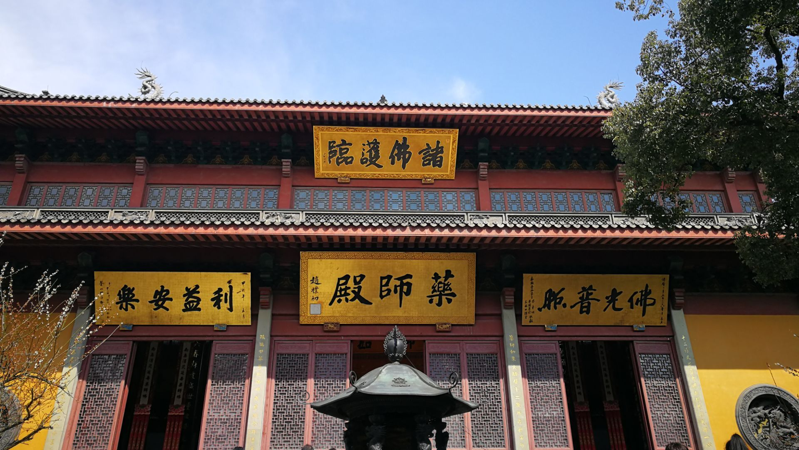
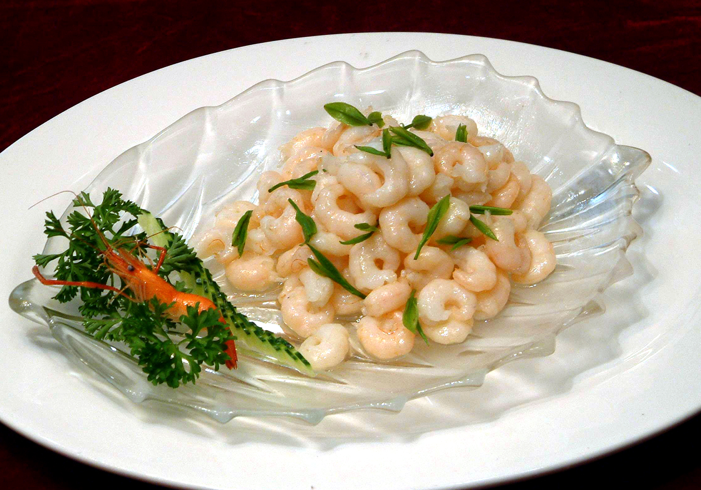
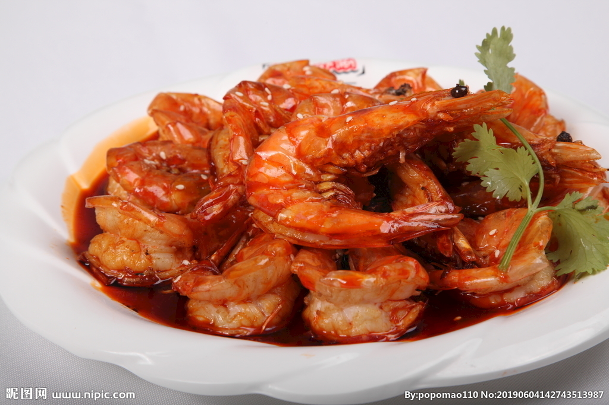

西湖：杭州的标志性景点，被誉为“人间天堂”。西湖风景区包括西湖本身和周边的苏堤、白堤、断桥等景点，是杭州最著名的旅游景点之一。
灵隐寺：位于杭州市西湖区灵隐街，是中国佛教禅宗的发源地之一。灵隐寺建于东晋时期，历经多次修缮和扩建，现为国家AAAAA级旅游景区。
千岛湖：位于杭州市淳安县，是中国最大的人工湖之一。千岛湖风景区包括千岛湖本身和周边的千岛群岛、千岛湖大峡谷等景点，是杭州著名的旅游胜地之一。
雷峰塔：位于杭州市西湖区岳王庙，是中国古代建筑的代表之一。雷峰塔建于南宋时期，历经多次修缮和重建，现为国家AAAAA级旅游景区。
西湖醋鱼：这是杭州的传统名菜之一，以西湖醋为调料，加上鲜嫩的鱼肉，口感酸甜可口。
龙井虾仁：这是一道以龙井茶和虾仁为主要原料的杭州名菜，虾仁鲜嫩，茶香浓郁，是一道别具特色的美食。
油爆虾是杭州的一道著名美食，也是浙江省的传统名菜之一。它的特点是虾肉鲜嫩，口感酥脆，外表金黄，香气扑鼻，是一道非常受欢迎的美食。
糯米鸡：这是一种杭州传统小吃，由糯米、鸡肉、腊肠等制成，口感香糯可口。
如果，把杭州比喻成一个人的话，那一定是一个有着明亮双眸、读过一些诗书、柔声细语、总是微笑偶尔落泪，且待字闺中的大小姐。她有得天独厚却不张扬的美貌，浓妆淡抹总相宜的西湖、清幽的九溪十八涧、闹中取静的西溪湿地、闲云野鹤般存在的西泠印社，让几乎每一个来过的人都称赞不绝；
出行前必备：
电器类：手机、自拍杆、相机
生活用品：防晒霜、水乳面霜、卸妆油、洗面奶、面膜、化妆品
衣服：根据天气带衣服、外套、运动鞋
药品：肠胃药、驱蚊水、感冒药、创可贴
其他：口罩、水杯、雨具、湿巾等
杭州交通：
机场：巴士候机楼到达厅8号门20元／人
杭州站（城站）：到西湖坐出租只要10分钟
杭州东站：以高铁动车为主，离市区比较近
杭州南站：离市区较远，去萧山的话可以选这里
杭州必玩景点
①孤山路 在杭州西湖最像海的转角，等一场浪漫 ②苏堤 苏堤适合情侣，家人，有一句话是这么说的，一起走完苏堤就能永远不分手 ③宝石山山顶可以俯瞰西湖全景，看日出日落绝④浴鹄湾杭州本地人很喜欢去的地方，人少景美 ⑤法喜寺求姻缘超灵的网红寺庙 ⑥满陇桂雨秋天杭城最诱人的地方，桂花香气四溢山谷 ⑦小河直街"上有天堂，下有苏杭"这里是老杭城的缩影 ⑧龙坞茶园逃离城市的喧嚣，误入世外桃源） ⑨良渚公园 风景很不错，还有小鹿，误入宫崎骏漫画⑩晓书馆 杭州最美图书馆
3天2晚游玩路线
Day1：满陇桂雨一花港观鱼一苏堤一孤山路
Day2：法喜寺﹣北山街﹣宝石山小河直街
Day3：良渚古城遗址公园﹣﹣良渚文化村